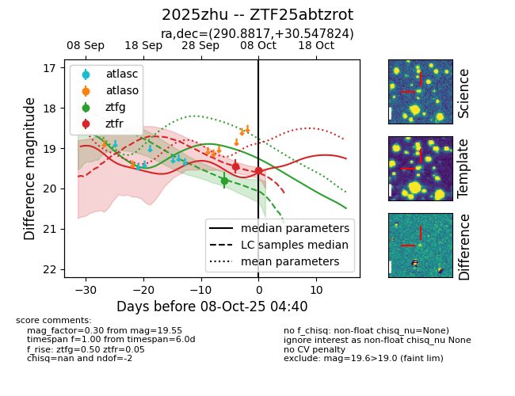
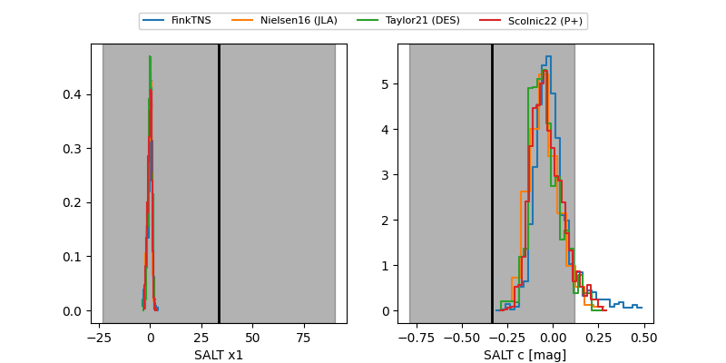

FINK: ZTF25abtzrot
Lasair: ZTF25abtzrot
ALeRCE: ZTF25abtzrot
TNS: 2025zhu
YSE: 2025zhu
ZTF25abtzrot (ztf,fink)
2025zhu (tns,yse)
equatorial (ra, dec) = (290.8817,+30.54782)
galactic (l, b) = (63.6719,+7.16871)


last ztfg=19.80, ztfr=19.55
1 ztfg, 2 ztfr detections